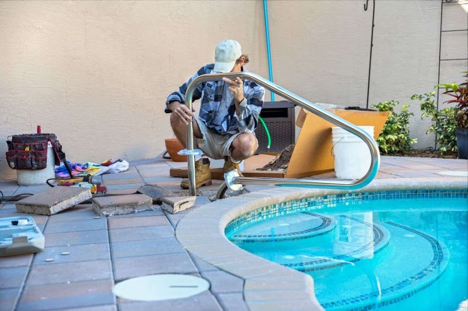

La Ca�ada Flintridge, CA
Sunshine Pool And Leak Stoppers
The Confidence Of A Watertight Pool
David, Tanner, Brandon, and Grant track down hidden leaks in pools, spas, and plumbing lines with pinpoint accuracy.
Pinpointing Pool Leaks Other Companies Couldn't Find
From spa jet cracks to underground plumbing leaks, we find the exact source before we touch a single tool.
Pool Leak Detection
We use professional leak detection equipment to check your pool shell, plumbing lines, and fittings until we find the exact source of water loss.
Spa Leak Repair
From cracked jet fittings to failing seals, we diagnose and repair spa leaks on the spot whenever possible.
Plumbing Line Diagnostics
When water loss doesn't show up on the surface, we trace it through the underground plumbing lines feeding your pool and equipment.
Leak Repair & Re-Plumbing
Once a leak is found, we repair it correctly and give you an honest recommendation if aging plumbing needs replacing down the road.

About Sunshine Pool And Leak Stoppers
Sunshine Pool and Leak Stoppers exists for one reason: to find pool and spa leaks that other companies miss. Whether it's a hairline crack in a jet fitting, a failing plumbing line, or a mystery leak that's spiked a water bill for months, David, Tanner, Brandon, and Grant have the equipment and the eye to track it down and fix it correctly the first time.
Customers keep telling us the same thing: we show up fast, even in the middle of a summer heat wave when a pool is losing inches of water a day, and we explain exactly what we find and what it costs before any work begins. More than one homeowner has called us after a previous pool company gave up, and we've walked the pool, spa, and plumbing lines until every source was located and repaired for good.


What customers say
4.9 stars across 50 Google reviews.
Super nice people at Sunshine Pool and Leak Stoppers. They came out within about 45 minutes after my call, which was a big help in the heat when my pool was losing water fast. david and the team checked everything carefully and found the pool leak in about an hour and a half. The pricing was clearly explained up front, and i approved it before the leak detection work started, so there were no surprises. Overall, very professional, fast service, and i appreciated how easy they made the whole process.
I’m very happy with the pool leak detection service. David quickly figured out what was causing my pool water loss after I had been dealing with very high water bills during the hot summer in La Cañada Flintridge. A previous pool company and another leak detection service had not been able to pinpoint the issue, but David promptly found the source of the leak and explained everything in simple terms. After the repair, my pool level has stayed consistent, the system is running well, and my water bills have gone back down. The pool also looks great, and it gives me peace of mind knowing the leak was handled correctly. David and his crew were professional, polite, and easy to work with throughout the whole process. I highly recommend this company for anyone who needs honest, reliable pool leak detection and repair.
No one wants to deal with a pool leak, but the whole process felt easy and stress-free with Sunshine Pool and Leak Stoppers. Tanner was professional, polite, and clearly knew pool leak detection inside and out. He found the issue quickly, explained what was going on in simple terms, and handled everything in a fast and careful way. My pool was taken care of efficiently, and I felt confident from start to finish. It was a big relief to have someone so skilled and courteous helping with the leak detection service in La Cañada Flintridge. I would gladly recommend this service to anyone needing help with a swimming pool leak or related pool inspection work. Very happy with the results and the overall experience.
After a long search, I finally found a true pool leak detection professional. Grant came out to inspect my leaking spa and quickly found a crack in one of the jet fittings. He repaired the leak on the spot and was also honest in explaining that the spa may need re-plumbing down the road. He was knowledgeable, helpful, and easy to talk to throughout the inspection. I also appreciated how clean, organized, and professional everything was, including his truck and equipment. It was a very professional pool leak detection service, and I felt confident in the work and recommendations.
i called to have a pool leak detected because my pool was losing several inches of water each day in the hot weather. david was very thorough, brought all the right leak detection equipment, and carefully checked the pool, spa, and plumbing lines until every leak source was found. i ended up having two leaks, and both were repaired correctly. the whole process was clear, professional, and worth the cost. my pool is holding water again, and i highly recommend their pool leak detection service.
Sunshine Pool and Leak Stoppers did a fantastic job with my pool leak detection service. I had been losing water for months and was worried the leak would be difficult to locate and expensive to repair, especially with how much a pool gets used in warm weather. A co-worker recommended them, and Tanner came out, explained the leak detection process clearly, checked everything carefully, and found the source much faster than I expected. The service was professional, the pricing was fair, and the whole experience went beyond what I was hoping for. I was very happy with the results and felt confident I was getting a good value.
I called about a possible pool leak and spoke with Brandon. Even though they do not service La Cañada Flintridge, he still took the time to answer my questions and explain the pool leak detection process step by step. He was helpful, knowledgeable, and generous with his advice about tracking down a leak. I would definitely hire them for pool leak detection services.
Great experience with Sunshine Pool and Leak Stoppers for our pool leak detection service. The scheduler was friendly on the phone, and Brandon was knowledgeable, professional, and easy to work with. He found the pool leak quickly, explained the issue in simple terms, and took care of it fast. Our pool is working properly again, and we are very happy with the service in La Cañada Flintridge.
After trying several pool services, I finally found a team that could accurately find and repair the leak in my pool in La Cañada Flintridge. They used solid pool leak detection methods, explained the issue clearly, and got everything fixed the right way. My pool is holding water again, and my water bill should go back to normal. Tanner and Brandon did a great job.
Common questions
How fast can you get to my pool once I call?
In most cases we can be on site within an hour of your call, which matters most during hot weather when water loss speeds up.
Another company already tried and couldn't find our leak. Can you still help?
Yes, several of our customers came to us after a previous pool company or leak detection service came up empty, and we found and repaired the leak using our own detection equipment.
Do you tell me the price before starting the leak detection work?
Always. We walk you through what we find and get your approval on the cost before any repair work begins, so there are no surprises on your bill.
Get in touch
Call or text and we will get back to you.
Hours
HoursAll hoursHide
| Monday | 5:00 AM – 10:00 PM |
|---|---|
| Tuesday | 5:00 AM – 10:00 PM |
| Wednesday | 5:00 AM – 10:00 PM |
| Thursday | 5:00 AM – 10:00 PM |
| Friday | 5:00 AM – 10:00 PM |
| Saturday | 5:00 AM – 10:00 PM |
| Sunday | 5:00 AM – 10:00 PM |